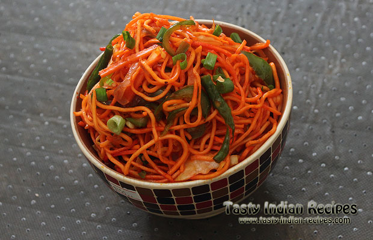

Shezwan Noodles

Schezwan Noodles Recipe is made with Boiled Hakka Noodles, Vegetables and Schezwan Sauce. Schezwan Noodles is very easy and fast cooking recipe.
Schezwan Noodles Recipe is the very famous IndoChinese dish served at fast food joints all over India. Schezwan Noodles Recipe is made with dried boiled Hakka Noodles, fresh vegetables and Schezwan Sauce. Schezwan Noodles is a very quick and easy recipe because it requires very less skills and can be made within 10 minutes, also making it fast cooking recipe.
To make Schezwan Noodles you can use home made schezwan sauce or any brand of ready made schezwan sauce available near your home. There are few more schezwan recipes in my blog, such as Veg Schezwan Fried Rice, Schezwan Mushroom Dry, Crispy Paneer in Schezwan Sauce, all of these recipes taste very good with Schezwan Noodles.
Ingredients
- 1 pack (100 grams) Hakka Noodles
- 3 cups water
- 1/2 cup cabbage, shredded
- 1 small capsicum, grated
- 1/2 cup carrot, grated or sliced finely
- 1/2 cup spring onion (white part), finely chopped
- 1/2 cup spring onion (green part), finely chopped
- 3-4 green chilies, slited
- 6-7 cloves of garlic / lahsun, finely chopped
- 1 tablespoon Schezwan Sauce
- 1/4 teaspoon white pepper powder
- A pinch of red-orange food color (optional)
- 2 tablespoon oil
- Salt to taste
Steps
- Boil about 3 cups of water in a big vessel and add noodles in it. Add 1/2 teaspoon salt and cook the noodles for 6-7 minutes on medium high flame. Adjust the salt as required. When noodles are almost cooked, strain them in a colander and put some cold water on them to prevent them from cooking further. Spread about 1/2 teaspoon of oil over on boiled noodles. In this way noodles will not be sticky which is very important for tossing. Dry noodles completely.
- In a non-stick pan, add 2 tablespoon of oil and add sliced onion, slitted green chilies in it. Saute them for about 1 minute on high flame. Now add chopped garlic and saute it for 30 more seconds on high flame. Add remaining vegetables (Carrot, Cabbage and Capsicum) and stir fry them on high flame for 2-3 minutes.
- Add 1/4 teaspoon of white pepper powder, salt to taste and add 1 tablespoon of Schezwan Sauce and stir fry them for 1 more minute.
- Now add boiled dry noodles, pinch of red orange color, 1 teaspoon vinegar, finely chopped spring onion leaves and start mixing them on high flame. You may add some oil at this point to make noodles less sticky and to mix everything very well. Stir frying / Tossing food in a pan is a technique through which you can mix food very well and apply heat evenly. Its not easy to master it but practice will make you perfect. It is also difficult for some women to toss food in pan due to weight of the pan. Also, it is best to cook these noodles in a wok to make sure food falls inside the pan while tossing and not spreading around the gas. Keep tossing your noodles. If you find it difficult to toss, lift the noodles with 2 fork spoons and keep mixing them.
- Keep mixing / tossing your noodles for 2-3 minutes on high flame, your Schezwan Noodles Recipe is now ready. Serve it hot with Schezwan sauce.